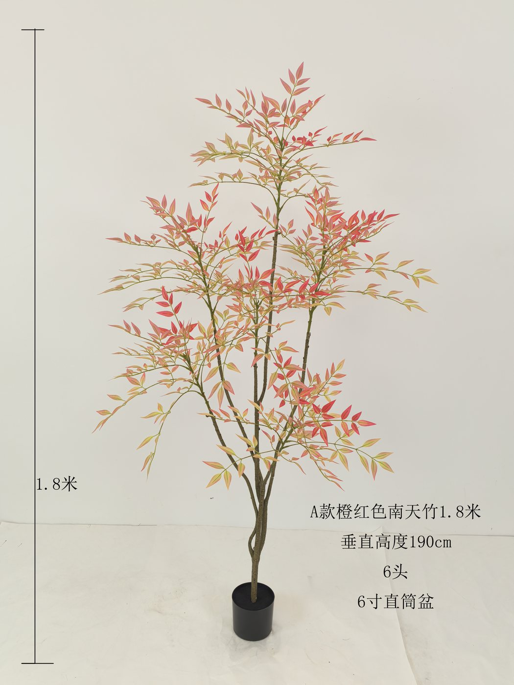
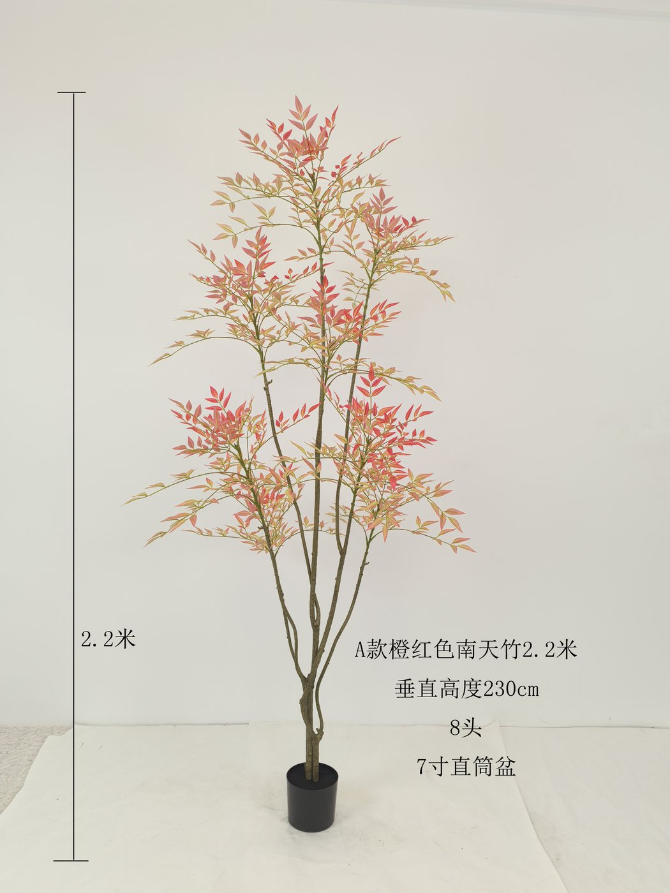

Foliage & Shrubs
Orange-Red Nandina, Style A (One-Piece)
Orange-Red Nandina, Style A (One-Piece) is a versatile greenery piece for retail displays, offices, and mixed plantings. Available in heights from 165–220 cm. Photos show the actual product; exact dimensions, packing, MOQ, lead time and price are confirmed by the seller on inquiry.
Opens your email application; sending happens there.
Product information
Orange-Red Nandina, Style A (One-Piece) is a versatile greenery piece for retail displays, offices, and mixed plantings. Available in heights from 165–220 cm. Photos show the actual product; exact dimensions, packing, MOQ, lead time and price are confirmed by the seller on inquiry.
Specifications
| Heights (from photos) | 165–220 cm |
|---|---|
| Product code | LC-N006 |